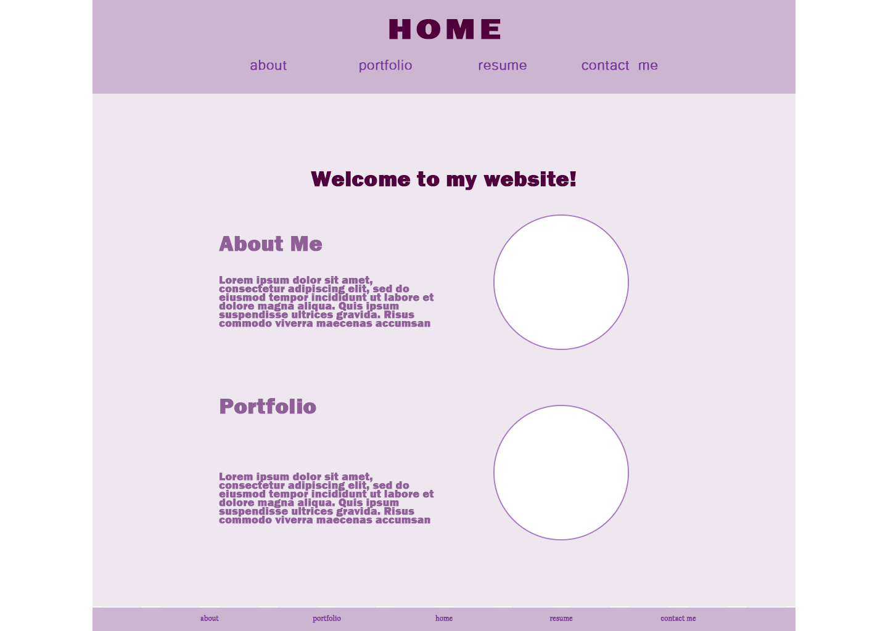
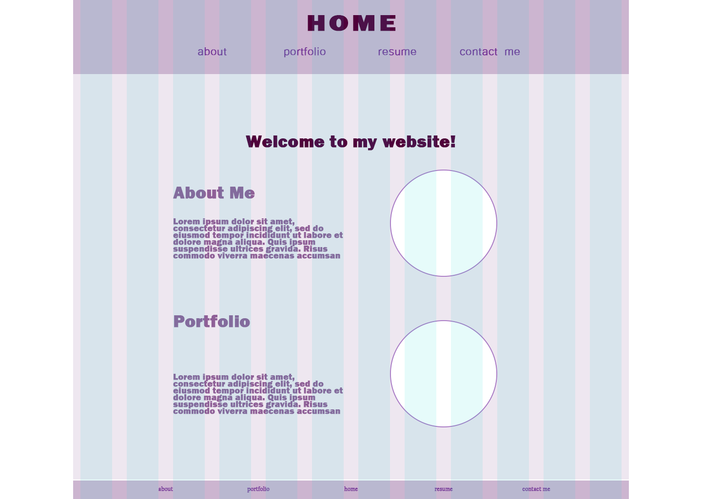
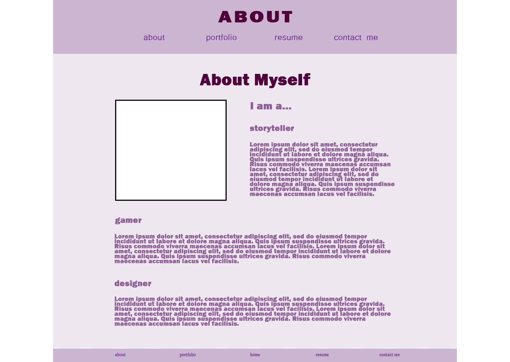
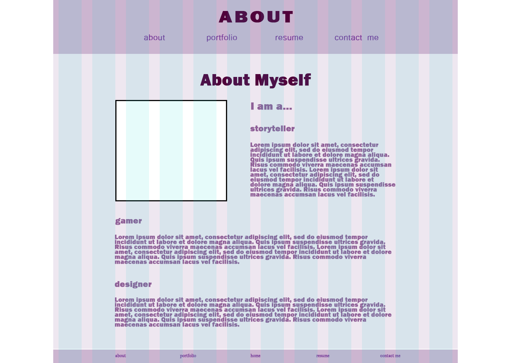
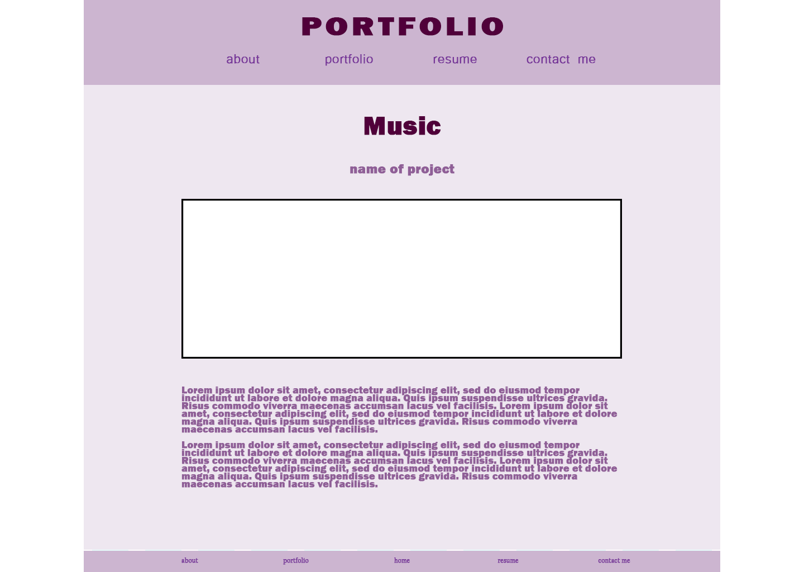
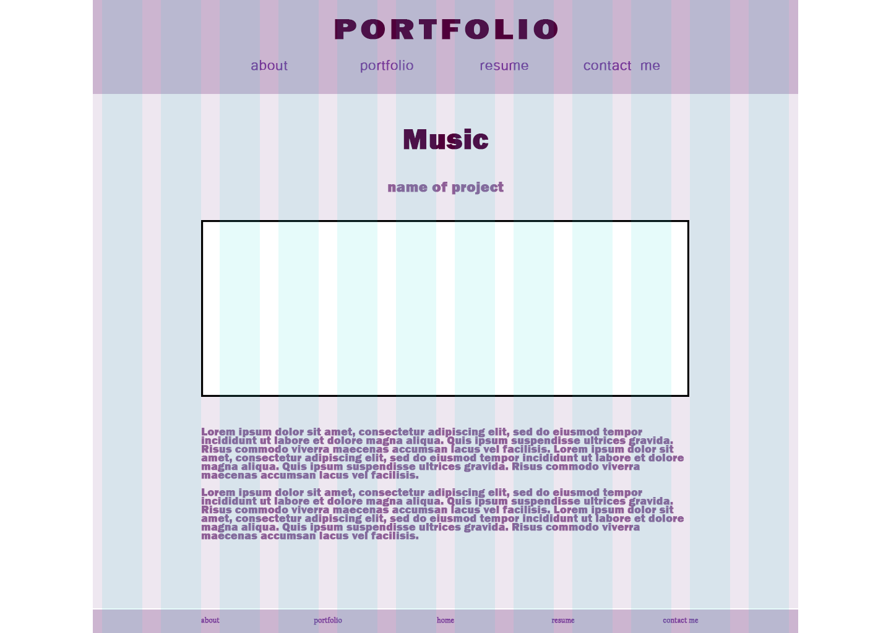

This idea is based on my first set of wireframes. Overall, I think I prefer my second idea better. Since that idea is more fleshed out, this one is still lacking detail and complexity. In future mockup updates, I'll likely be adding a background image of sorts for each page. I also cleaned up the color scheme a bit from the moodboard, though it might be a bit monochromatic (mainly purple) now. I'm also not crazy about most of the fonts and will likely be finding better and more unique ones for the revision.
Similar to my first wireframe idea, the home page has links to "about me" and "portfolio". I made sure to include navigation in both my header and my footer for ease of acess. Depending on how much content is on each page, the header and footer won't be seen at the same time, making it less repetitive. Each circle represents a photo, the top being one of myself and the bottom being an image from one of my works.
 The about me page currently has a lot of planned text and not a lot of interesting elements for it. In addition the might be a bit cringy so I'll probably fix that in future revisions haha.
 The basic portfolio design will be the same for roughly every piece of work. The current format has every piece on the same page, so I'll likely have a header at the top that links to parts of the page (music, games, other works), as well as a thing linking to the top for ease of access.
 